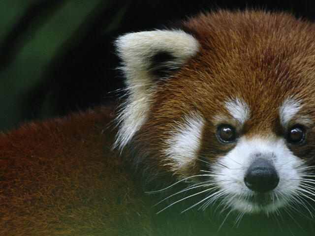

Pictures of red Pandas



From WWF's Article on Red Pandas:
The red panda is slightly larger than a domestic cat with a bear-like body and thick russet fur. The belly and limbs are black, and there are white markings on the side of the head and above its small eyes. Red pandas are very skillful and acrobatic animals that predominantly stay in trees. Almost 50% of the red panda’s habitat is in the Eastern Himalayas. They use their long, bushy tails for balance and to cover themselves in winter, presumably for warmth. Primarily an herbivore, the name panda is said to come from the Nepali word ‘ponya,’ which means bamboo or plant eating animal.
They LOVE Bamboo!
Read more about them on the official WWF website.Red pandas are an endangered species!
Red panda's are mammals.
Red Pandas are omnivores.
Red pandas live around 8 to 10 Years.